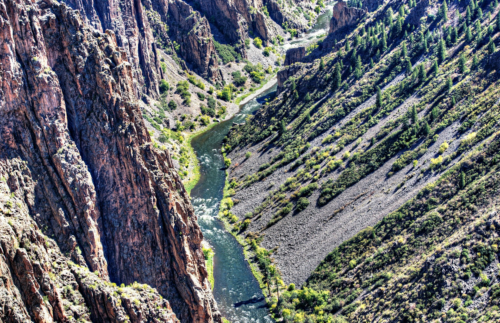
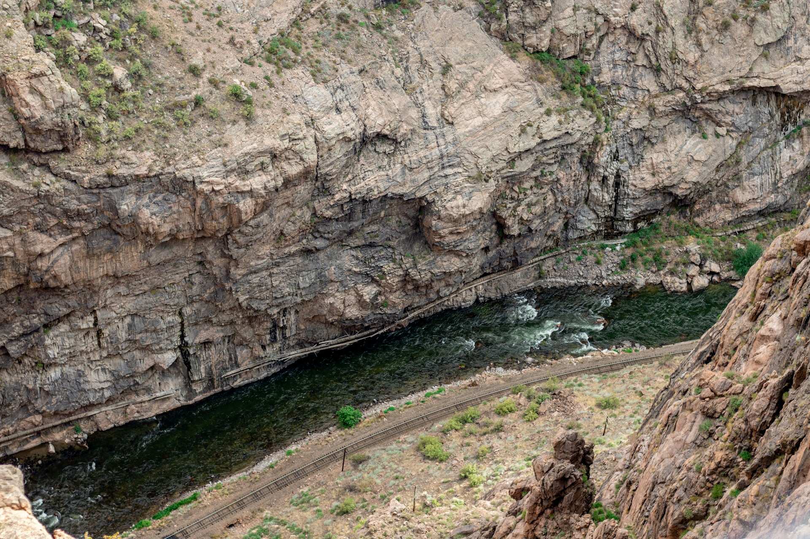

Colorado Rivers
Gunnison River

Gunnison river runs through the Black Canyon, in Gunnison National park. The Gunnison river is the second largest river in Colorado. There are many things you can do at the Gunnison River, as it is especially known for white-water rafting and fishing.
Arkansas River

The Arkansas River is the most popular white-water rafting river in Colorado. While it's name might be deceiving, many people love to go rafting on the Arkansas River out of Buena Vista, CO. The best time of year to raft on the Arkansas River is generally from June to August.